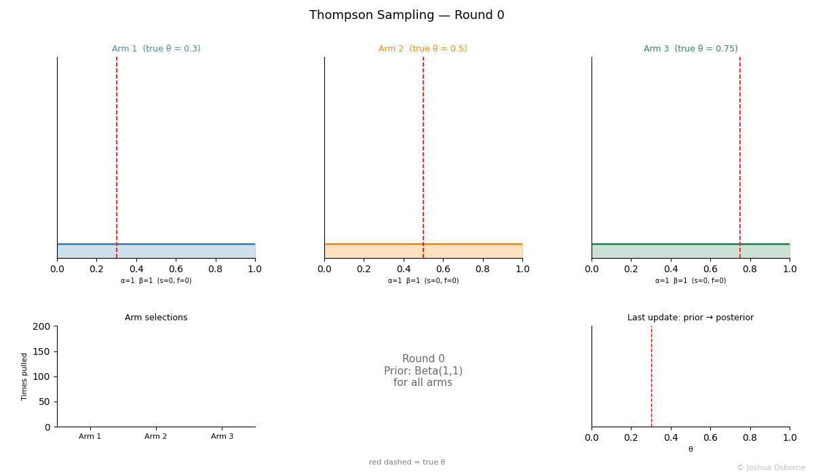
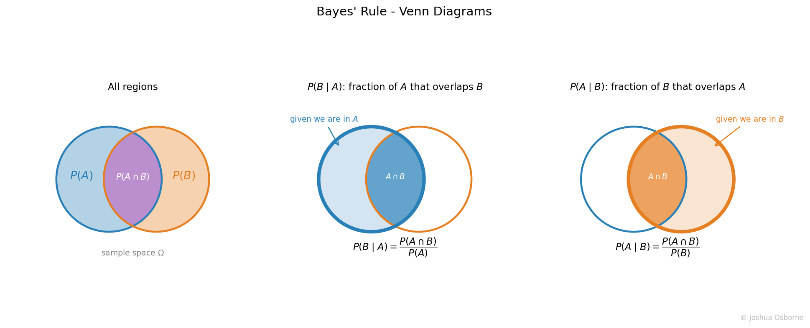

Statistics Notes
How prior beliefs update on new evidence. The foundation of Bayesian inference, Thompson Sampling, and conjugate priors.
Contents
Before the equations, here is the notation used throughout:
| Symbol | Name | Meaning | Plain English |
|---|---|---|---|
| \(\Omega\) | Sample space | the set of all possible outcomes | “everything that could happen” |
| \(A, B\) | Events | subsets of \(\Omega\) | “a particular outcome or group of outcomes” |
| \(A \cap B\) | Intersection | outcomes in both A and B | “A and B” |
| \(A \cup B\) | Union | outcomes in A or B or both | “A or B” |
| \(A^c\) | Complement | outcomes in \(\Omega\) but not in A | “not A” |
| \(P(A)\) | Probability | a number in \([0,1]\) measuring how likely A is | “the chance of A” |
Quick example - rolling a fair die, \(\Omega = \{1,2,3,4,5,6\}\):
Conditional probability is the probability of event A occurring given that B has already occurred: \[P(A \mid B) = \frac{P(A \cap B)}{P(B)}\] Intuitively: we restrict the sample space to only the outcomes where B happened, then ask what fraction of those also include A.
Bayes’ rule describes how to update a belief when new evidence arrives. First you begin with what is called your prior. The prior represents your belief in something before seeing any evidence. When modelling a probability (such as a click rate or open rate) with no prior knowledge; Beta(1,1), the uniform distribution, is a common uninformative starting point because it assigns equal plausibility to all values of θ between 0 and 1. You then observe evidence, and Bayes tells you exactly how much to update that belief into a posterior.
The likelihood is what connects the two: it measures how well the evidence is explained by your hypothesis.
\[P(A \mid B) = \frac{P(B \mid A) \cdot P(A)}{P(B)}\] \[P(B) = \int P(B \mid A) \cdot P(A) dA\]
Each term has a name:
| Term | Name | Meaning |
|---|---|---|
| \(P(A \mid B)\) | Posterior | probability of A being true given we’ve seen B |
| \(P(B \mid A)\) | Likelihood | probability of seeing B if A were true |
| \(P(A)\) | Prior | our belief in A before seeing any evidence |
| \(P(B)\) | Marginal | overall probability of seeing B regardless of A |
NOTE: normally, we do not calculate the marginal distribution as it is computationally costly, instead we use the unnormalized posterior, \(P(B \mid A) \cdot P(A)\) .
Confusing P(A|B) with P(B|A): these are not the same thing. The probability of testing positive given you have a disease is not the same as the probability of having the disease given a positive test. Mixing these up is known as the prosecutor’s fallacy.
Ignoring the prior (base rate neglect): even a highly accurate test gives a misleading result if the condition is very rare. A 99% accurate test for a disease affecting 1 in 10,000 people still produces mostly false positives on positive tests. The prior \(P(A)\) must always be factored in.
Thinking the likelihood ratio equals the posterior ratio: if the likelihood of the data under hypothesis 1 is 5× higher than under hypothesis 2, that does not mean hypothesis 1 is 5× more probable. The ratio of posteriors also depends on the ratio of priors.
Thinking the prior always dominates: with enough data, the likelihood swamps the prior and the posterior is driven almost entirely by the evidence. The prior only dominates when data is scarce.
Bayes’ rule underpins a large amount of machine learning and statistics:
Naive Bayes classifiers (text classification, spam filtering)
Bayesian optimization (hyperparameter tuning)
Probabilistic graphical models
Any problem that involves reasoning under uncertainty and updating beliefs with new data
Here I display the use of Bayes rule through a Bayesian multi-arm bandit known as Thompson sampling. Thompson sampling is one of the clearest demonstrations of Bayes’ rule in action. Each arm in the bandit has an unknown reward probability, \(\theta\). We model our belief about \(\theta\) with a Beta distribution, which acts as the prior. Each time we pull an arm and observe a reward or failure, we update that distribution. the Bayesian update is given by:
\[\underbrace{P(\theta \mid \text{data})}_{\text{posterior}} \propto \underbrace{P(\text{data} \mid \theta)}_{\text{likelihood}} \cdot \underbrace{P(\theta)}_{\text{prior}}\]
Because the Beta distribution is the conjugate prior for the Bernoulli distribution likelihood, the update is simply:
\[\alpha \leftarrow \alpha + 1 \quad \text{(on success)}, \qquad \beta \leftarrow \beta + 1 \quad \text{(on failure)}\]
The posterior from one round becomes the prior for the next; Bayes’ rule is applied repeatedly. To make this concrete, let’s go through an example. We are testing email subject line C, which starts with no data: \(\text{Beta}(1,1)\). We send the email and the recipient opens it (reward = 1):
| Term | Value | Meaning |
|---|---|---|
| Prior \(P(\theta)\) | \(\text{Beta}(1, 1)\) | flat; we know nothing about C’s open rate yet |
| Likelihood \(P(\text{data}\mid\theta)\) | Bernoulli; 1 success | one open observed |
| Posterior \(P(\theta \mid \text{data})\) | \(\text{Beta}(2, 1)\) | belief shifts right; C is probably decent |
The next round, \(\text{Beta}(2,1)\) becomes the new prior. If C gets another open: \(\text{Beta}(3,1)\). A failure: \(\text{Beta}(2,2)\). Each pull is one application of Bayes’ rule. The animation below shows this process running across 200 rounds for three arms simultaneously (true θ = 0.3, 0.5, 0.75):

What to watch:
Top row: each arm’s Beta distribution narrowing and shifting toward its true θ (red dashed line). The posterior becomes more certain as evidence accumulates (bottom right).
Bottom right: the prior (blue) vs posterior (green) for the arm just pulled.
Bottom left: Arm 3 dominates pull counts because its distribution confidently sits highest
Here, a simple way of deriving bayes rule through venn diagrams is shown. \(P(A \cap B)\) in the plot below is the same physical region regardless of which direction you approach it from. For those unfamiliar, the symbol “\(\cap\)” is a union and it means where there is overlap. Another way to say it is “where A AND B”

From the definition of conditional probability:
\[P(B \mid A) = \frac{P(A \cap B)}{P(A)} \implies P(A \cap B) = P(B \mid A)\,P(A)\]
\[P(A \mid B) = \frac{P(A \cap B)}{P(B)} \implies P(A \cap B) = P(A \mid B)\,P(B)\]
Since both expressions equal \(P(A \cap B)\), set them equal and rearrange:
\[P(B \mid A)\,P(A) = P(A \mid B)\,P(B) \implies P(A \mid B) = \frac{P(B \mid A)\,P(A)}{P(B)}\]